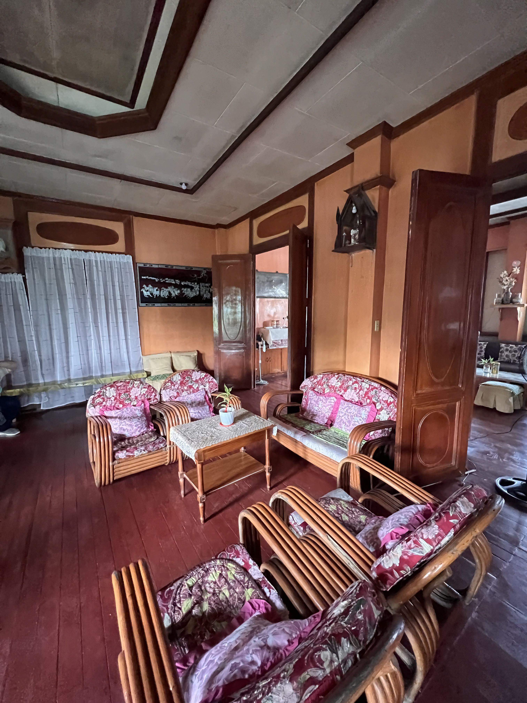
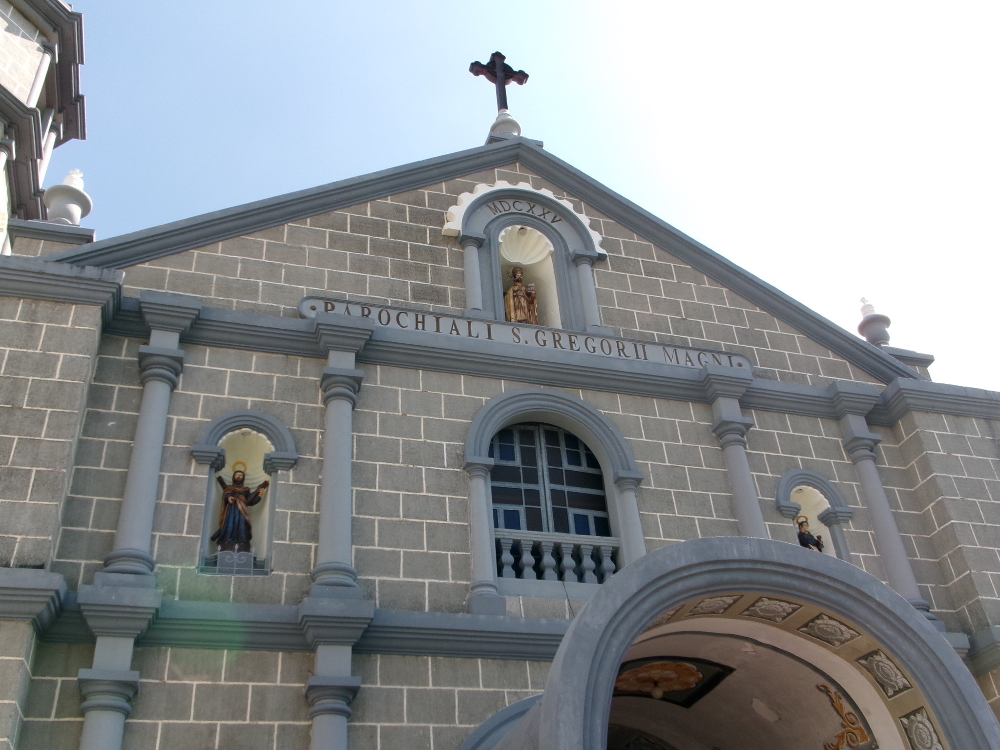
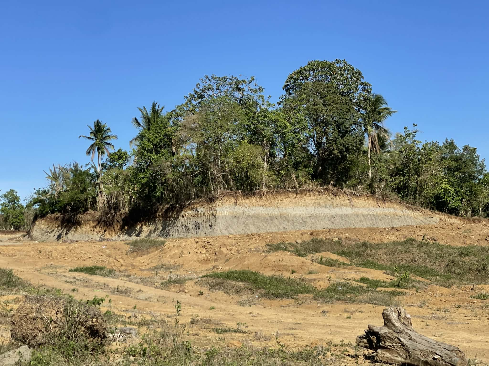
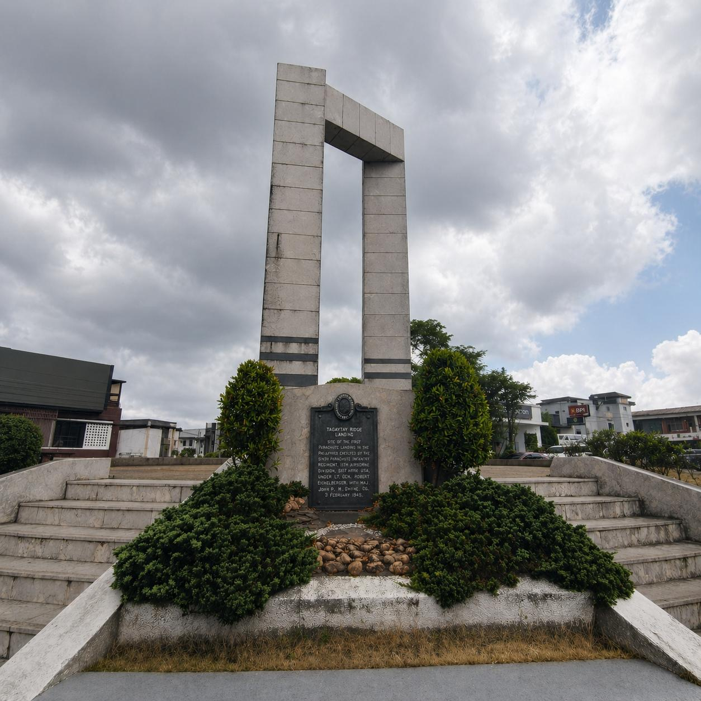
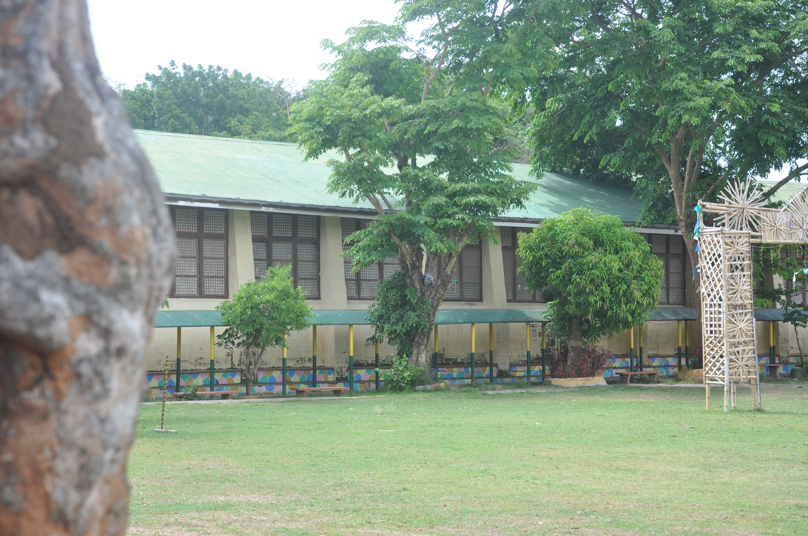
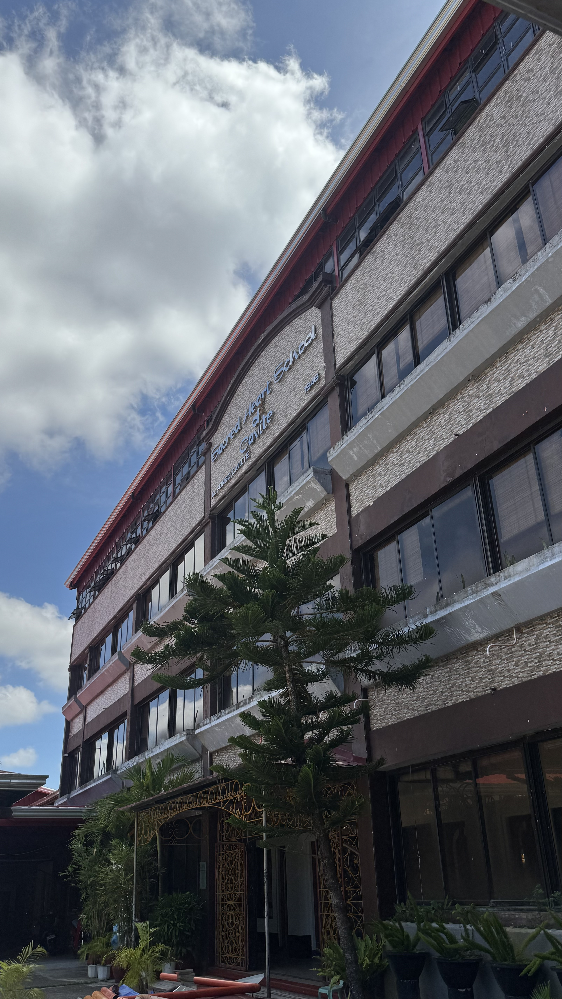
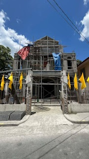
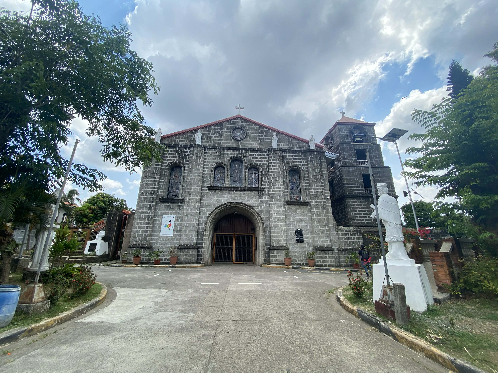

Avinante House
Alfonso, Cavite
Loading Digital Coffee Table Book…

Alfonso, Cavite

Trece Martires, Cavite

Indang, Cavite

Amadeo, Cavite

Tagaytay City

Alfonso, Cavite

Alfonso, Cavite

Gen. Emilio Aguinaldo

Alfonso, Cavite
The Cavite Heritage Sites The Cavite Heritage Sites digital platform is a modern extension of a traditional coffee table book. It presents the history, culture, and identity of Cavite in a simple and interactive digital format.
This project features selected historical landmarks, natural attractions, and cultural institutions across the province. Each site shows the unique stories and heritage of the community.
The goal of this platform is to preserve and share Cavite’s heritage, making it accessible to students, tourists, and future generations.